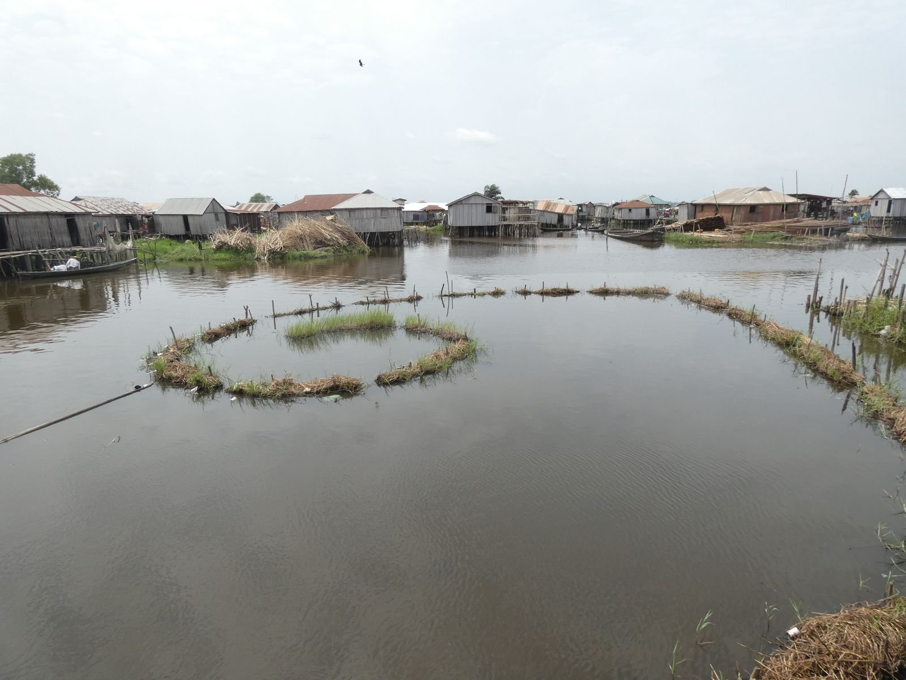
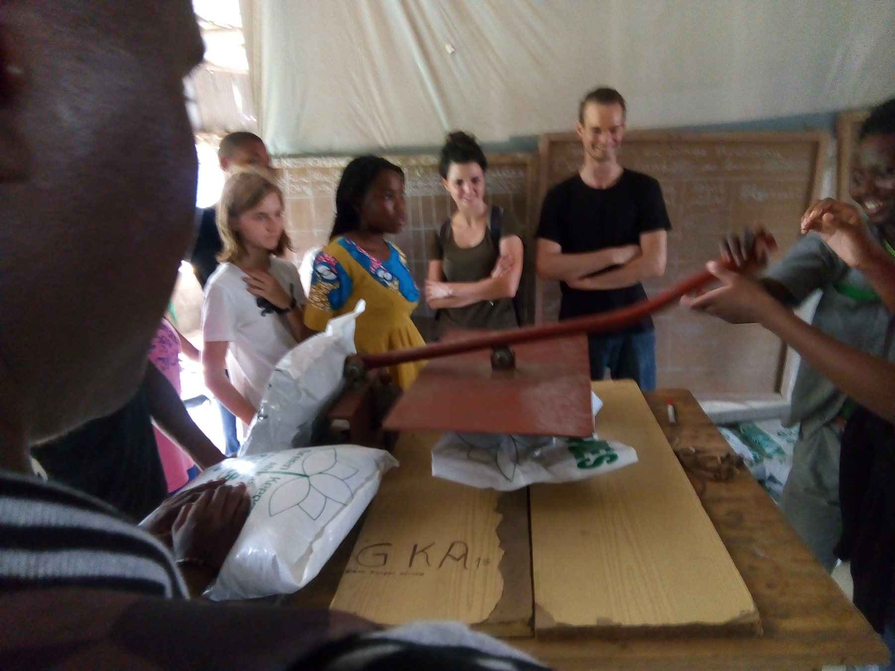

CGénial 2019 · club sciences de l’EFE Montaigne · partenariat avec l’IRD
À Ganvié, concevoir des réponses aux périodes de crue.
Un projet d’innovation environnementale mené avec et pour les habitants d’une cité lacustre exposée aux crues. Sur place, nous les avons consultés et interrogés pour comprendre leurs difficultés avant d’imaginer des solutions adaptées.

Pourquoi ce projet ?
Partir des difficultés vécues pendant les crues
À Ganvié, les crues saisonnières affectent le quotidien des habitants d’une cité installée sur le lac Nokoué. Notre club sciences a choisi de ne pas commencer par une solution toute faite : nous nous sommes rendus sur place pour consulter, sonder et interviewer des habitants, afin de mieux cerner leurs besoins et les effets des crues sur leur cadre de vie.
Le projet s’inscrivait dans l’édition 2019 du concours CGénial et visait des pistes d’innovation environnementale à impact positif pour aider la communauté à mieux traverser ces périodes.
Enquête et diagnostic
Mettre en regard le terrain et les données
Avec l’appui de l’Institut de recherche pour le développement (IRD), nous avons exploité des relevés météorologiques de la région et étudié la salinité de l’eau du lac Nokoué. L’objectif était de mieux comprendre ses effets sur les matériaux et la santé des habitants, en complément des échanges réalisés sur place.
Nous avons également rapproché les données de niveau d’eau de la période de crue. Un prélèvement du 9 février 2019 affichait une salinité mesurée de 13 g/L.
Pistes d’innovation
Imaginer des réponses à partir des usages locaux
À partir des besoins exprimés et du diagnostic, le groupe a élaboré plusieurs pistes : compostage collectif, récupération d’eau associée aux jacinthes d’eau et systèmes de pilotis à hauteur modulable pour mieux s’adapter aux variations du niveau d’eau. Il s’agissait de propositions de projet, pas d’équipements déployés à Ganvié.
La démarche m’a appris à construire une réponse technique à partir d’enquêtes et de données, plutôt qu’à partir d’une solution prédéfinie.
Résultat du concours
Vainqueurs de la phase « projets internationaux », puis finalistes
Notre équipe a remporté la phase « projets internationaux » de CGénial 2019, puis atteint la finale à la Cité des sciences et de l’industrie.
Photos du terrain
Les lieux et les échanges qui ont nourri le projet


Livrables
Le projet a donné lieu à une présentation de concours, à des relevés et analyses, ainsi qu’à des concepts d’aménagement. Les documents détaillés peuvent être demandés par e-mail.
Me demander le dossier